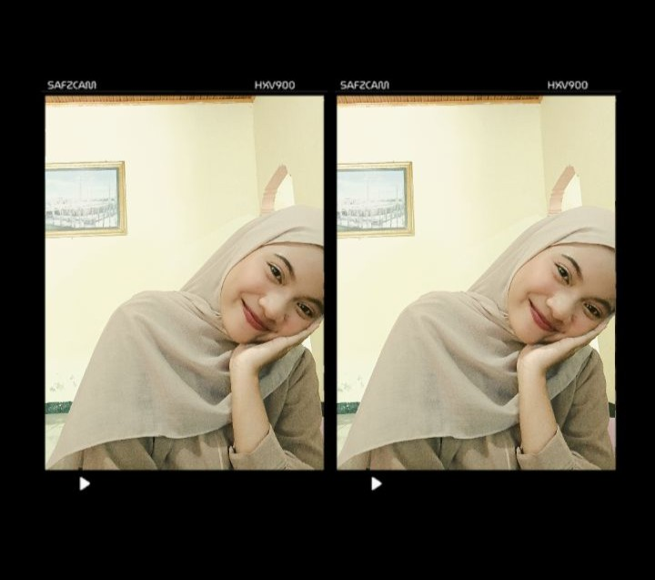

Nama: Cendy Agista Haerani
Tempat, Tanggal Lahir: Tanah Grogot, 28 Agustus 2007
Umur: 19 Tahun
Status: Mahasiswa
Program Studi: Teknik Informatika
Kampus: Universitas Muhammadiyah Kalimantan Timur
Hobi: Mendengarkan Musik
Cita-cita: Menjadi Nasabah BCA Prioritas
Motivasi: Jalanin aja selagi hidup
Setiap orang memiliki perjalanan hidup yang berbeda-beda. Ada yang sudah mengetahui tujuan hidupnya sejak kecil, tetapi ada juga yang masih mencari tahu apa yang sebenarnya ingin dicapai. Dalam kehidupan sehari-hari, kita akan menemukan banyak pengalaman baru yang bisa memberikan pelajaran berharga. Terkadang, sesuatu yang tidak berjalan sesuai rencana justru membawa kita menuju hal-hal yang lebih baik. Oleh karena itu, kita perlu belajar untuk tetap sabar, berusaha, dan tidak mudah menyerah ketika menghadapi kesulitan. Selain itu, penting juga untuk menghargai waktu, menjaga hubungan baik dengan orang lain, serta berani mencoba sesuatu yang belum pernah dilakukan sebelumnya. Tidak semua hal harus diselesaikan dengan terburu-buru karena setiap proses membutuhkan waktu yang berbeda. Selama kita terus berusaha dan mau belajar dari kesalahan, akan selalu ada kesempatan untuk memperbaiki diri dan menjadi pribadi yang lebih baik. Hidup bukan hanya tentang seberapa cepat kita mencapai keberhasilan, tetapi juga tentang bagaimana kita menikmati setiap proses, memahami diri sendiri, dan menghargai hal-hal sederhana yang sering kali terlupakan.
Instagram: @cndyagista_
TikTok: @siapa3288
GitHub: github.com/cendyagistahaerani
WhatsApp: Hubungi saya
Email: cendysalim333@gmail.com